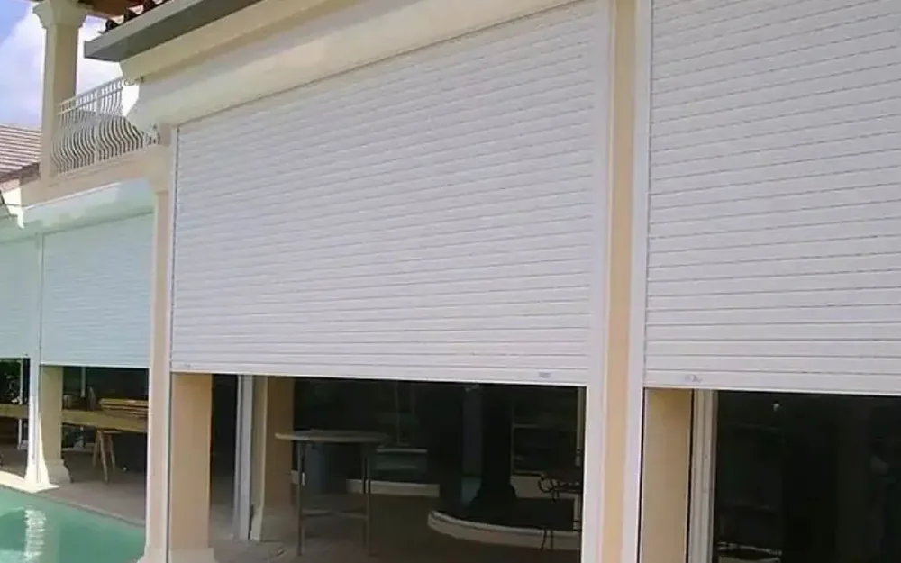

Cimentaciones para Hoteles y Resorts en la Riviera Maya
Para desarrolladores, propietarios y equipos de proyecto que construyen hoteles boutique, resorts y condo-hoteles en Cancún, Playa del Carmen, Tulum, Puerto Morelos, Cozumel y Costa Mujeres. Aquí el terreno no es el de los libros: roca caliza kárstica con cavernas ocultas, nivel freático somero y salino, y arena de playa sobre roca en la costa. En la cimentación se gana o se pierde el presupuesto de un hotel, por eso la diseñamos con datos reales del suelo, no con los planos del vecino.

Un proyecto de Recrea Construction
Cimentación hotelera, regla general: sobre caliza sana, un hotel de 3–5 niveles suele resolverse con zapatas aisladas o corridas y contratrabes; en terreno mixto o con nivel freático alto se usa losa de cimentación; las torres sobre la barra de arena costera (Zona Hotelera de Cancún, Costa Mujeres) normalmente bajan a roca con pilas. La cimentación suele representar 10–20% del presupuesto de estructura, y el estudio de mecánica de suelos define en qué caso está.
Lo Que Hacemos Bajo el Suelo
Mecánica de Suelos
Sondeos o perforación rotatoria hasta roca, pruebas de laboratorio, nivel y química del agua freática, con reporte firmado para el DRO y el corresponsable en seguridad estructural.
Detección de Cavernas
Geofísica (resistividad eléctrica o georradar) y barrenos de exploración en retícula para ubicar cavernas y zonas blandas antes de cerrar el diseño.
Zapatas, Losas y Pilas
Zapatas aisladas y corridas sobre caliza, losas de cimentación en terreno pobre, pilas coladas en sitio o micropilotes hasta roca en arena y rellenos.
Nivel Freático y Bombeo
Excavación bajo el nivel freático con bombeo o well points, sótanos impermeabilizados, cisternas y fosos de elevador.
Concreto Grado Marino
Baja relación agua/cemento, cemento resistente a sulfatos, mayor recubrimiento del acero y protección contra la corrosión por agua salina y brisa marina.
Permisos y Supervisión
Memoria de cálculo para la licencia de construcción, firma del DRO y del corresponsable estructural, inspecciones y pruebas de concreto en obra.
Por qué el terreno de la Riviera Maya es distinto
La península de Yucatán es una losa de caliza kárstica. La lluvia la disuelve por dentro; así se forman los cenotes. Para una cimentación eso significa:
Cavernas que no se ven desde la superficie. Una zapata puede quedar sobre una costra delgada encima de un hueco. En una casa es un riesgo; en un hotel de 60 llaves con cargas concentradas en columnas es el riesgo principal.
Roca variable. La laja dura, el sascab blando y bolsas de arcilla cambian en pocos metros: dos columnas del mismo edificio pueden necesitar soluciones distintas.
Nivel freático somero y salino cerca de la costa. Limita sótanos y cisternas, obliga a bombear durante la excavación y ataca al concreto y al acero.
Arena de playa sobre roca en la barra y la franja costera (Zona Hotelera de Cancún, Costa Mujeres, frente de playa en Playa del Carmen y Tulum): las zapatas sobre arena se asientan, por eso los edificios altos bajan a roca.
Cómo elegimos la cimentación
No empezamos por un tipo de cimentación. Empezamos por el estudio de suelos y las cargas:
Estudio de mecánica de suelos con perforación hasta roca sana y nivel freático.
Exploración de cavernas donde la geología lo pide: geofísica sobre la huella del edificio y barrenos donde las lecturas son sospechosas.
Bajada de cargas del proyecto arquitectónico y estructural: niveles, albercas en azotea, tinacos, equipos.
Opciones con costo y plazo: por ejemplo zapatas con relleno de cavernas contra losa, o losa contra pilas, comparadas lado a lado antes de aprobar.
Las cavernas que aparecen en la excavación se tratan, no se tapan: se limpian y rellenan con concreto ciclópeo o fluido, se inyectan, o se salvan con una trabe o una losa más gruesa, según indique el ingeniero estructural.
Concreto que aguanta el agua salada
La cimentación está en la parte más agresiva del edificio: agua freática salina, humedad y, en frente de playa, brisa marina. Especificamos concreto denso de baja relación agua/cemento, cemento resistente a sulfatos cuando la química del agua lo pide, buen recubrimiento del acero, curado correcto y cilindros de prueba en cada colado. Ahorrar aquí aparece 10–15 años después como columnas fisuradas y oxidadas, muy caras de reparar con el hotel operando.
Cimentación Típica de un Hotel por Tipo de Terreno
Terreno
Dónde
Cimentación habitual
Cuidado con
Caliza sana (laja) tierra adentro
Playa del Carmen, Tulum pueblo, Puerto Morelos, Cancún ciudad
Zapatas aisladas o corridas con contratrabes
Cavernas ocultas: explorar la huella
Roca mixta, sascab, rellenos
Antiguos bancos de material, orillas de laguna, lotes rellenados
Losa de cimentación o zapatas con mejoramiento de suelo
Asentamientos diferenciales entre columnas
Arena de playa sobre roca
Zona Hotelera de Cancún, Costa Mujeres, franjas frente al mar
Pilas coladas en sitio o micropilotes a roca, con dados
Nivel freático alto y salino; zona federal
Karst con cavernas conocidas
Tulum, Akumal, zona de cenotes
Tratamiento de cavernas más losa o zapatas profundas
Depende del terreno. Sobre caliza sana, un hotel de 3–5 niveles suele llevar zapatas con contratrabes; en terreno mixto o con nivel freático alto es común la losa de cimentación; las torres sobre la barra de arena costera suelen bajar a roca con pilas. El estudio de mecánica de suelos lo define.
Sí. En un hotel el diseño estructural, la licencia de construcción y la firma del DRO y del corresponsable estructural dependen de él, y en el karst es la única forma de saber si hay cavernas bajo la huella del edificio.
Se ubican con geofísica y barrenos, y luego se limpian y rellenan con concreto, se inyectan o se salvan con trabes o una losa más gruesa, según indique el ingeniero estructural. Encontrarlas antes del diseño es mucho más barato que durante la excavación.
Normalmente 10–20% del presupuesto de estructura. Es menor sobre roca sana con zapatas y mayor con pilas, sótanos bajo el nivel freático o mucho tratamiento de cavernas. El precio firme sale después del estudio de suelos.
Para un hotel boutique, unas semanas para el estudio de suelos y la exploración de cavernas, y después aproximadamente 1–3 meses de obra de cimentación según el sistema, el bombeo y el tamaño de la huella.
Empiece con una revisión de cimentación
Envíe el terreno y el proyecto; le decimos qué estudio de suelos necesita y qué opciones de cimentación comparar. Respuesta en 2 minutos.